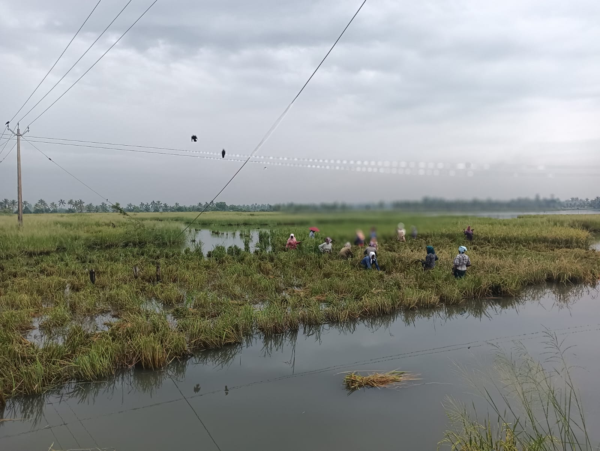
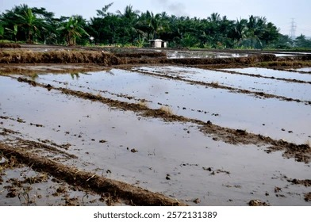

Pokkali Village — the umbrella project. PAADI Tales — the tour product. Paadi Veedu — the agro ecosystem. A complete marketing strategy to transform Pokkali Village into Kerala's premier eco-tourism destination — with an ethnic restaurant, waterfront jetty, electric backwater boat, and cultural theater driving revenue across tourism, eco-products, hospitality, and food.
This 6-month marketing plan transforms Paadi Village from an emerging agritourism concept into Kerala's premier eco-tourism destination — driving revenue across four business verticals: village tourism, eco-products, hospitality, and food business.
Core Strategy: Build digital presence, establish tour operations, launch e-commerce, and scale through partnerships — all anchored by the unique story of a 3,000-year-old, zero-chemical, GI-tagged rice-prawn farming system.

Pokkali Village is delivered through three integrated components under one umbrella brand — each essential, each reinforcing the others.
India's first GI-tagged rice tourism destination. 3,000-year heritage. Bank-anchored, community-owned, digitally native, foreigner-friendly.
A bookable tour experience starting with a 4-hour "Pokkali Discovery" half-day tour, supported by a mobile app for digital-first booking.
An 18-month Agro Ecosystem Restoration programme: 51 pilot homes scaling to 2,500 homes; zero-chemical kitchen gardens; a 51-item feast served at Paadi Veedu Kitchen — an ethnic restaurant built in traditional Kerala style, run by women's SHGs.